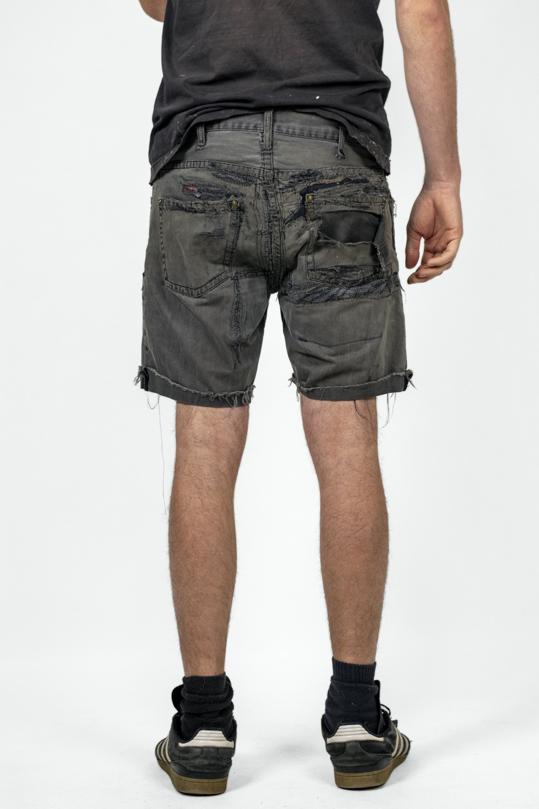
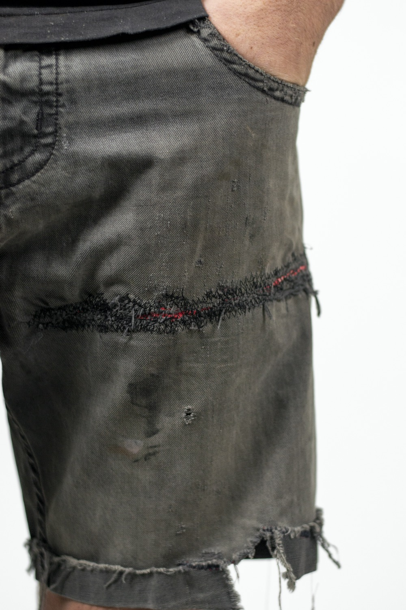
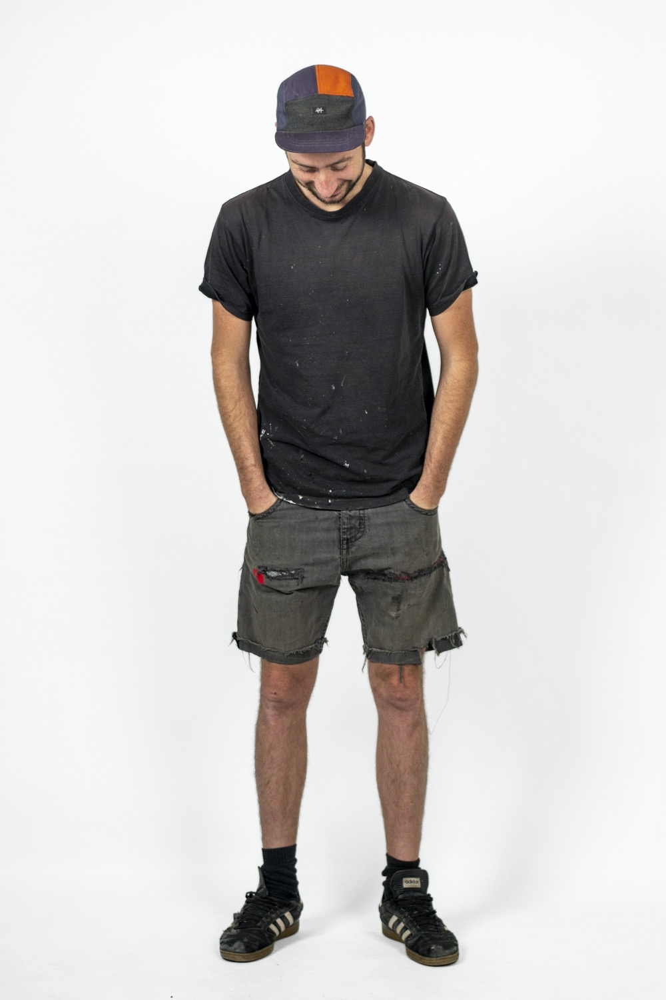
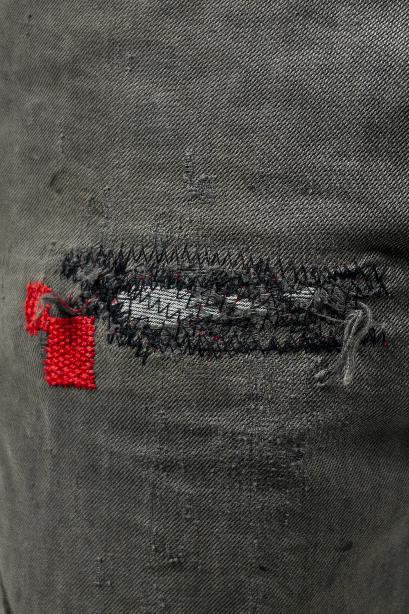

Long repaired shorts
The old tried and true. The zigzag patch repair is strong and lasts for a long time, a great all-round fix for any garment. Dave has used it a lot for these shorts. They are almost a new garment but the patches are staying strong.
TECHNIQUE
Patch Repair
